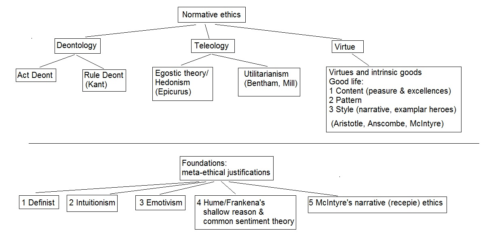

2.4 Contingent ethics
In this section we shall discuss the notion of the good-life considered one of the key deliverables by a storied-world.
We will take the notion of the good-life as a primary criterion for ranking storied-worlds and assume the notion of
truth to be complementary to the notion of good-life. Since the moral issues are integral to good-life, I will give also
a brief overview of ethics – a branch of philosophy studying ethical norms and their justificatory grounds.
An alternative interpretation of this section is as follows. Earlier in this chapter we considered metaphysical and
epistemological criteria to discriminate between real and fake storied-worlds. In the rest of this chapter we introduce
additional non-epistemological constraints which may help us to select among epistemologically plausible worlds a subset
of those satisfying certain moral requirements or aesthetic preferences.
Enlightenment hijack
Until the dawn of the Enlightenment in Europe in early 18th century, the notion of truth in many cultures was
subordinate to the notion of well-being. In the time of Plato and Socrates, for example, truth was a tool, a roadmap to
the good life. And the notion of good life was distinguished from happiness, the latter referring to some transient
states and feelings, while the former, i.e. good life, indicating sustainable well-being - the well-being that lasts
(may be over the whole span of the human life). Happiness was associated with pleasures – short living phenomena which
in a long run may have a detrimental effect on the well-being. Trivial examples provide excessive drinking or
consumption of food. So, the truth was required to figure out and choose among many other alternatives the right course
of actions (which is the course leading to the sustainable well-being). Truth was considered as a notion somewhat
secondary, subordinate to the notion of the sustainable well-being (or a good life).
This ordering of things when the well-being comes first and the truth follows has been reversed after the Enlightenment.
With the rise of science the truth has become a value by itself, and the well-being became a secondary byproduct of this
concept. The supremacy of truth over the well-being channelled the evolution of science and enabled explosive growth of
our knowledge of the nature which in turn enabled innovations and new technologies. On the other hand, a man has become
a hostage of the notion of truth which has limited his ability to deal with certain existential issues. The supremacy of
truth has instilled on him a submissive perception of the reality. The line of reasoning goes as follows - “We live in
the universe of particles and nothing else. It is a bit dull, and you may wish to have something more aesthetically
appealing and entertaining, but you cannot afford it because it contradicts to truth. The truth may undermine the
quality of your life, but you must still stick to it, because you do not have choice.” And, of course, the rationale for
this line of reasoning is an idea that the truth precedes, and the well-being follows.
In our days, for many pressing problems (particularly those involving complex social systems) people do not have enough
knowledge to claim truth. The paradigm approach to solving these problems by making inferences from the true premises
does not work anymore. Subsequently, the notion of the epistemological truth nowadays may not have enough utility to
guide our decisions with such complex systems. To justify our decisions we need other guiding principles. For example,
our quality of life and well-being seem to be very important to us. Can we use these notions in order to either
substitute or complement the notion of truth when solving such complex problems? For example, can we rank the quality of
different storied-worlds in terms of the well-being of the inhabitants of these worlds rather than in terms of their
epistemological truth value?
The reader may argue that by replacing truth with the notion of the well-being or a good life, we are replacing obscure
with more obscure. However, I believe, the notion of good life may help us to, at least, ameliorate the problem. For one
thing, I am not advocating to get rid of the notion of truth altogether. I am suggesting that truth can be an item
complementary rather than surplus to our needs. Under new framework, truth becomes important only marginally at the
fringes of our developments, only in as much as our well-being can be influenced by the integrity and pragmatics of our
new constructs. In other words, we keep the notion of truth in our new world in order to satisfy our needs for the
integrity and consistency of the description of that world. We cannot live in a meaningless unarticulated world.
However, again this integrity can be achieved within many different vocabularies and in many different ways.
Another reason we may succeed with this proposal is that we all have a device that can measure the success or a failure
for a particular SW to deliver the promised well-being. That device is our self, a human being. People may not be
particularly good with logical inferences especially when it comes to complex systems, they may not quite handle
evidential reasons coming from modern physics, but we are all particularly well equipped for evaluating the levels of
our self-content.
There is no doubt that well-being is a historical concept filled with contingencies and conditioned by storied-worlds
(except, perhaps, some basic elements of it hardwired into us at biological level). The idea that we can abandon our own
worlds and take some neutral grounds to evaluate the manifold of many other possible worlds in order to rank them
according to some objective criteria is futile. We are always rooted in a particular world and make judgements from
these specific perspectives. The conception of the well-being will always be historical and conditional on a particular
vantage point. This leads to the accusation in relativism – something good in one SW might be bad in another SW. How
could we rank SWs objectively using the notion of the good life, if the notion of good varies from one world to another?
We cannot, because a human being outside any SW does not exist and there is no a universal understanding of the notion
of the well-being applicable across all SWs. On the other hand, for any specific world we can test whether the delivery
of the well-being (as articulated and promised by this particular world) is indeed achievable for the inhabitants of
this world or it is not. Note that apart from epistemological constraints and well-being requirements, a storied-world
must satisfy other conditions such as it must be sustainable and have resources to resist offences from the rival
worlds.
Quality of life and well-being
While the literature on quality of life is rapidly growing, a single, generally accepted, definition of this term does
not exist. According to Farquhar (1995), after World War II, in American vocabulary, the term quality of life was
initially used in reference to material goods – a house, a car, appliances, money to travel and retire. Then following
major political and social upheavals starting in the late 1960s, emphases switched towards personal freedom, leisure,
emotion, enjoyment, personal caring. The term then served to indicate that the good life represents more than simple
material affluence. Same time there was an increased use of the term “qlf” in social research, followed from mid 70-th
by an increase of the use of the term in trials of clinical intervention; in particular in the field of oncology and
psychiatry. In medicine and nursing science, qlf offset survival as an aim, as the awareness that long life is not
necessarily a good life has increased. Since that time a profusion of published papers have dealt with the term qlf, but
in a heterogeneous manner making comparison difficult (Farquhar, 1995). Farquhar M. (1995) Elderly peoples definition of
quality of life. Soc. Sci. Med., Vol. 41, No. 10, pp. 1439-1446.
The subject of QLF could be a person, an organisation, a society. This notion can be applied to specific social
categories such as future generations (victimless crime), old people, sick people, dying people (even those who have
just only a few minutes left to live). In what follows we shall focus primarily on the quality of life of an individual
person. Furthermore, we assume him to be neither evil nor hero, and like many of us to be a mix of qualities some them
being good some not so good. I do not mind this person to be an average, guy, perhaps even a little bit boring.
The reader may wonder why we bother considering quality of life of some average, boring guy?
We picked this average guy for two reasons 1) he is like many of us 2) I hope we will be able to make him a better
person. In the next chapter we will engage in the project of designing and instantiating new storied-people. Our
average, boring guy will be a starting point. Until then, let’s have a closer look on the notion of the well-being and
qlf.
The notion of quality of life is often considered as a composite term made out of a number of features. Biophysical
aspect of the quality of life, for example, refers to our basic needs as physical and biological organisms. Note that in
certain communities the practice of the self-mortification is integral to the notion of the quality of life (e.g.
martyrs).
A human being is an intelligent being characterised with a more or less coherent belief-network. The degree of the
coherence of this network reflects the level of our mental integrity which in turn defines our ability to position
ourselves within environment and build new interpretations of it if needed.
A human being is essentially a social being, implying social norms and ethical principles guiding relationship between
members of the community. As noted by Aristotle “Only wild animals and gods can leave by themselves”. One of the old
problems in this area is that of the reconciliation of private needs with the needs of the society. Not least pressing
is the problems of reconciliation of contradictory norms by different cultures. In practice social qlf is often measured
and assessed in terms of specific indicators, such as the number of play-grounds in some region, social security and
insurance of people, the level of crime, transport, access to medical facilities, the level of unemployment, etc.
Social qlf implies reconciliation with others, and I will take the ethical quality of life to mean reconciliation with
the self.
Aesthetic dimension of the qlf implies access to sources of aesthetic goodness (beauty), and the capacity to understand
and enjoy that beauty. Again, one of the key issues here is the problem of reconciliation of the private artistic
aspirations and collective needs. Another potential source of the controversy is due to clashes between immediate
aesthetic pleasures and long-term needs of the sustainable well-being.
The quality of life traditionally is measured in terms of subjective and objective criteria. The former is based on
opinion of people, and the later reflects objective measurable factors potentially influencing qlf (e.g. access to
social goods, services, security, health-care, job, etc). Over the last decades there is a growing appreciation of the
importance of the subjective approach to assessing qlf, which is incorporated into a wide contextual framework and
reflects the totality of life perception by individuals. Note that in medical literature this subjective qlf is often
called existential or spiritual qlf.
Well-being
The term well-being is often considered a synonym of the “quality of life”. Sometimes it is used as something close to
flourishing in terms of external goods and wealth. In what follows we will take well-being to be an integral indicator
of the “quality of life”. In other words, the well-being is considered a function of various particular aspects of the
quality of life (e.g. mental, social, biophysical etc.).
Sustainable wb vs good life
The well-being of an individual, considered a collection of quality of life indicators, has little value unless it
persists with time. We are normally interested in a sustainable well-being, the well-being that lasts. The notion of the
sustainable well-being is reminiscent of the notion of the Good Life but these two does not quite match, at least
according to the definition of the well-being we have introduced so far. When we think about a person who had a Good
Life, we normally do not associate the latter with just a bundle of qlf criteria accompanying the life of this
individual. There must be something else in Good Life apart from the number of the playgrounds, job security, health and
material prosperity. In order to figure out what we have missed here, in the next section we turn our attention to
ethics – a brunch of philosophy which undertakes to answer such questions as what is morally good and how to achieve a
morally good behaviour. One of the divisions of ethics, that we will be particularly interested, is called a virtue
ethics. Virtue ethics is concerned with the question of what is a good life and how to achieve t.
Ehics and Good Life
A comprehensive review of ethics is beyond the scope of this manuscript. The reader interested in this subject can find
nice reviews elsewhere. In what follows I will only outline major divisions of ethics to highlight key points relevant
to our discussion. The discussion draws heavily on texts by …..

Figure 2.2 The tree of ethics
The field of ethics, also known as moral philosophy involves understanding principles underlying wrong and right
behaviours and developing recipes for the right conduct. What is the right course of actions in this or that
circumstances or more general question how we should live our lives to make it right? In other words, these are
questions about guiding our actions under specific circumstances as well as about managing our lives in general. Ethical
issues apply not only to individuals but to social groups and institutions as well.
Ethics must be distinguished from prudence, legislation and skills. A person could exhibit prudent behaviour but have
immoral intensions. And as illustrated in (The puzzle of ethics) the prudent person could be mistaken and easily
forgiven, while mistakes in the domain of morality typically incur much heavier punishment (e.g. sending someone in jail
on purpose and being not just is a vice). Unlike legislation moral principles typically are not created through the
meetings and discussions of representatives or delegates of a society. Unlike skills and other intellectual virtues,
moral behaviour and attitudes are nurtured and habituated through the recurrent practices which often starts at
childhood. Moral sentiments are also distinguished from the factual statements as they are typically charged with
passions and attitudes. By making an ethical statement we are expressing our attitudes with regard to certain issues.
Unlike opinion, moral statements always imply a certain degree of generalisation, a feature called the principle of
Universalizability. Moral claims always imply reference to some kind of truth valid across people and, perhaps,
cultures. When we say that we do not like something, we express our private opinion and implicit to this opinion is an
assumption that other people may have another opinion. When we say that something is bad (in a moral sense) we make a
quasi-factual statement. This statement implies that any other “normal” person would concur with our judgement.
Through that principle of the Universalizability the moral judgements provide communication channels (a common language)
that we can share with other members of the community. That common language could be based on reason, or other sorts of
“human nature” (e.g. psychology) that members of the community have in common. It is because we have that something in
common (e.g. reason, passions) that we can convey the moral message and expect others to understand us.
A human being internalises ethical norms of a particular culture in early childhood. This internalisation often happens
on a subconscious level and could be quite irrational, even though some sort of the first order justification could be
present. As often happens the set of these norms may not be self-consistent, or contradictions may arise in new
situations encountered by an adult. The moral philosophy starts and is fuelled by this king of contradictions. If
customs and internalised norms cannot be relied upon anymore, then the question is what we can rely upon in making moral
judgements? That is when many come to think about the science of ethics.
The field of ethics is traditionally divided into metaethics, normative ethics, and applied ethics. The methaethics
addresses such questions as whether norms and moral values are relative or absolute, where from they came, why we should
follow them. And some of the answers are that moral norms are given by gods, or they are some spirit-like entities that
exist by themselves somewhere, the modern day explanations are more inclined towards the standard three-fold
explanation: moral norms are just a social construct (culturally minded), or they are products of reason, or they
reflect preferences built in our genes and revealed through, for example, our passions.
The normative ethics aims at discovering basic principles that underlie our moral decisions. The most prominent
approaches represent teleology (consequentialism), deontology, and virtue ethics. Contractual theory is a relatively
recent add-on defending a vision of the moral norms are merely social constructs.
Deontology
The key point of Deontology is that there are some features inherent to the action itself or accompanying it that make
that action good, or bad, right or wrong. Two different views (act-deontology and rule-deontology) are typically
differentiated within the theory of the deontology. According to act-deontologists, the decision pertaining to the moral
values of a particular act must not follow from some general rules or principles but must be based merely on features
specific to that particular act. The generalising rules are secondary features that build on the decisions pertaining to
these particular cases. The moral value of a particular action must be either self-evident, or intuitively grasped, or
guessed by some other way (which, to my mind, makes the whole project a bit dubious).
The key point of the rule-deontology is that one should consult either polices, or religious books, or some other set of
rules or principles in order to decide the right course of actions in a particular situation. A prominent champion of
deontology was Kant. Inspired by the success of natural sciences he went on to develop science of moral law, which he
though as a principle (categorical imperative) capable of guiding all moral decisions. Unfortunately, the project of the
“arithmetic of love” was doomed to fail. The principle he eventually settled on (something like “treat others the way
you wish to be treated yourself”) did not quite work as he hoped for. “Two things fill the mind with ever-increasing
admiration and awe – the starry heavens above me and the moral law within me.” – reads the inscription on his tombstone
in Kaliningrad (former Konigsberg).
A Bible, and in a particular ten commandments provide another example of deontological approach to choosing the right
set of actions.
Objections to deontology
There could be several basic principles contradicting to each other. To fix this problem, we may choose to have one
single principle, but one principle may not catch the manifold of real situations. Further, it is not trivial to justify
a particular set of principles. The principles are not unique - you may come up with one set, I may suggest another set
and we may argue about the best set as long as we wish. The fact that, so far, no one has succeeded in developing such
set of self-consistent deontological principles lends some further support to this objection.
Consequentialism (teleology)
The key idea of teleology is that the moral worth of an action must be judged by the consequences it produces rather
than by some rules or intentions etc. Depending on the kinds of outcomes, the teleological view expresses either
egoistic ethics (hedonism) or universalist ethics (more commonly known utilitarian ethics). Hedonists claim that all men
aim at good for himself. That good could be equated with the pleasure or some other qualities (e.g. knowledge, skills,
virtues). The argument for egoistic ethics is that of a psychology of a human being such that he always aims at the good
for himself. The argument against this view is that the psychology argument is not valid. The hedonist may reply that
when we seek goods for ourselves these goods comprise goods of others, in other words, the care of self implies the care
of others because others are integral part of the self. However, further two objections could be put forward against
this argument. First, if care of self is understood as care of others than egoistic ethics turns into the altruism,
which is another subject to discuss elsewhere. Second, the care of self could be equated to the care of others in an
ideal society where goods of individuals coincide with goods of the society. In practice this is not the case. One more
point raising doubts in the egoistic virtue theory is that ethics and moral judgements often are relevant when one has
to resolve an issue between two arguing parties, or when it comes to advising or recommending to others. It is hard to
see how one can advise someone the best course of actions when one is concerned only with his own welfare.
The key point of utilitarianism could be summarised as “the greater balance of good over evil for greater numbers”. The
problem is in calculating this balance. For this definition of the morally good actions to be non-circular, the goods
produced through the discussed action must be goods in a non-moral sense. Whatever these non-moral goods are, when we
talk about distributing them among people (good for the greatest numbers), we will have to make moral judgements. For
example, we may treat all people equally, or decide that those in greater need have privileges, or choose to encourage
those with brighter future etc. But then our utilitarian definition of morally good acts again becomes circular: to find
out what is morally good we need to know what is morally good. Another objection to the cosequentialism is that, as we
seen earlier, we often do not know the future. The utilitarian may argue that it is a possible balance of good over evil
that counts, but then we may want to clarify what that possibility exactly means. Does it still count as possible if
chances are very slim? Further complication arises from the observation that the definition of non-moral good and evil
is not straightforward. How we discriminate different kinds of pain or different kinds of pleasure? If the outcome of an
action is a mix of goods and evils, how this action must compare with another action producing another mix of goods and
evils, and are they compatible at all?
Emotivism
The failure of deontological and teleological theories to furnish the foundation of ethics accompanied with the rise of
logical positivism in early 20th century translated into the so called emotivist theories of ethics, which many
philosophers regard as no ethics at all. Remember that logical positivists consider two basic classes of statements,
meaningful and meaningless. The meaningful statements or theories are those that either (a) belong to the realms of math
or logic. These statements are called analytic, or sometimes tautologies since the meanings of the subject-predicate
sentence resides in the definition of the subject (b) or belong to the realms of the synthetic judgements, that is
judgments that can be verified against empirical evidence, where the word empirical has a purely physicalist meaning.
All other statements which express neither analytic nor synthetic truth are meaningless. On this account all moral or
metaphysical statements have no meaning since the truth value cannot be proved neither through the chain of logical
inferences not through the verification against observations. Note again that this subdivision on meaningful and
meaningless classes is based on an implicit background belief that the whole point of the discussion is truth rather
than well-being. If it were otherwise, one would wonder why we rank our statements in terms of the verification
principles rather than in terms of their utility to our well-being? If we twist a bit our frame of enquiry by asking
which of statements is more conducive to our well-being rather than which one is true, then the whole suite of the
metaphysical and moral questions and judgements regains their meaning and validity. It makes sense to ask such questions
and seek answers.
The legs of the emotivism can be seen in the logical positivist theory. The key point of emotivism is that our moral
judgements reflect our private feelings and emotions with regard to the subject under consideration. Whatever reasons we
provide for our judgements they are of the secondary importance, since the decision is governed by emotions. The theory
is sometimes called “Boo-Hurrah!” theory. For example, “killing is bad: mean “killing is Boo!”, “justice is good” mean
“justice is Hurrah!”.
Virtue ethics
According to McIntyre, Enlightenment projects which sought to build firm foundations for ethics based on either reason
alone (Kant), or passions (Hume), or the leap of faith (Kierkegaard), have failed. Neither of these projects was able to
provide convincing theories to furnish such foundations. Towards the end of the 20th century ethics has found itself
suspended in thin air with no solid grounds. McIntyre believes that virtue ethics can provide solution to this impasse.
The key feature distinguishing virtue ethics from deontology and consequentialism is that instead of asking “what is the
right course of actions in this or that particular circumstances?”, the virtue ethics addresses the question of what
kind of persons we ought to be in order to live good lives. The question of doing was replaced with the question of
being. The focus of the enquiry now is on the features of personality and character traits (e.g. virtues) that may or
may not be conducive to good life. The latter, the notion of the good life itself (called eudaimonia by Aristotle),
clearly is a subject of the investigation as well.
How the development of personalities or character traits bears on making moral judgements in particular situations? The
idea is that problems charged with moral issues are often so complicated that neither purely deontological nor
consequentialist approach could handle them properly. The framework of rules and utility calculus is too stiff to
accommodate and handle properly the level of complexity inherent in many real-life situations (note analogy with wicked
problems in sociology by Rittel and …). Instead of building on expert systems fine-tuned to particular situations, the
idea of virtue ethics is that of a weak solution whereas we agree that cannot solve all problems in hand and some degree
of failure must be admitted and accepted. Complex problem must be managed by a man of virtue who is predisposed to act
in accordance to the virtue code. Regardless circumstances such person will tend to serve justice rather than injustice,
will not bend under the pressure, will be wise enough to give a due recognition to experts etc. Sounds like a
description of the perfect politician, and indeed early talks about virtue ethics we found in Plato’s Alkiviades are
about skills required by politicians to discharge their duties most efficiently. Later on, the conception of virtues has
been generalised beyond the narrow circle of politicians to include other members of the society. According to virtue
ethics, in a long run, given complexities and uncertainties of various life situations, solutions by virtuous men
outperform these based merely on expert rule-guided judgments.
Now, all these talks about virtuous men sound promising and inspiring - what could be better than a society where
virtuous behaviour is a norm rather than an exception? And yet, this is not the case - according to McIntyre, we live in
dark ages which leave very little space for virtues. Why this has happened?
One of the reasons, I believe, is that modern economies are organized in a such way that it pays to advertise vices
rather than virtues (e.g. consumerism, greed, acquisitivnes). Another reason is that the place of virtues has been taken
by legislation. There are rules and policies that monitor and guide almost any conceivable movement in our life.
Remember that the roots of the so called “honour culture” in southern countries are in a poor economy and weak
legislation (ref to Lucas). Virtues fill gaps in legislation. The better legislation and economy the weaker virtues.
Now, destroying economy and weakening the legislation in order to stimulate virtues is clearly a no goer. But making
steps toward establishing and promoting institutions that would encourage and promote virtues might be the right course
of actions. I am not sure whether light, cosmetic measures will be enough to fix the problem. What is needed is a
deep-down redesign of the core characteristics of a personality - a big challenge, especially when scaled up to
encompass the whole community.
Virtues
Two concepts - eudaimonia (good life) and virtues - are integral to the virtue theory. With regard to virtues, it should
be mentioned at the outset that the conception of virtues discussed so far is conducive to understanding of virtues in a
fairly narrow sense, as a means toward the good life for an individual (or means towards the better society). Virtues we
said are those qualities which help to achieve good life. On the other hand, according to Aristotle, virtues must not be
considered as means towards the good life. Rather the virtues by themselves have a value and the good life is just a
composite terms for the life of the virtuous man.
According to Frankena (), “ Virtues are dispositions or traits that are not wholly innate; they must be acquired, at
least in part, by teaching and practice, or, perhaps, by grace. They are also traits of “character”, rather than traits
of “personality” like charm and shyness, and they all involve a tendency to do certain kinds of action in certain kinds
of situations, not just to think or feel certain way. They are not just abilities or skills, like intelligence or
carpentry, which one may have without using. … We must distinguish between virtues and principles of duty like “we ought
to promote the good” and “we ought to treat people equally”. A virtue is not a principle of this kind; it is a
disposition, habit, quality, or trait of the person or soul, which an individual either has or seeks to have.”
(Frankena, Ethics)
Virtues are typically arranged into hierarchical structures. Cardinal virtues, for example is a set of virtues such that
(i) they cannot be derive from one another (ii) all other moral virtues can be derived from or shown to be forms of
them. They form a kind of complete and minimalistic axiomatic basis for all other virtues. Frankena also distinguishes
between the first-order and second-order virtues, with the later occasionally blending with the class comprising skills
and abilities. The list of cardinal virtues varied for different times and in different cultures. Plato and other Greeks
thought there are 4 cardinal virtues:
1. wisdom
2. courage
3. temperance
4. justice
“ Christianity is traditionally regarded as having 7 cardinal virtues: three “theological” virtues – faith, hope and
love; and four “human” virtues – prudence, fortitude, temperance and justice. This was essentially St. Thomas Aquinas’s
view; since St. Augustine regarded the last four as forms of love, only the first three were really cardinal for him.”
(Frankena) Many moralists, among them Schopenhauer and Frankena, have taken benevolence and justice to be the cardinal
moral virtues.
It is also common to distinguish between intellectual and moral virtues. Intellectual virtues contribute to moral
virtues and are often considered as a key ingredient of the moral virtues. The key difference between these two virtues
is that intellectual virtues are acquired through the conventional studies at school and uni. You can learn this virtue
by reading books. In the case of moral virtue, the dominant mode of acquiring this virtue is through the repetitive
practice leading to a character trait, which is the disposition to act in a certain way in certain situations.
The distinction between intellectual and moral virtues, reflects also the dichotomy between rule-based morality and
virtue-based morality, the morality of doing and morality of being. On the later account “morality is or should be
conceived as primarily concerned, not with rules and principles as we have conceived so far, but with cultivation of
such dispositions or traits of character. Plato and Aristotle seem to conceive of morality in this way, for they talk
mainly in terms of virtues and the virtuous, rather than in terms of what is right or obligatory.”(Frankena). On
Frankena’s view the distinction between these two approaches to morality need not to be exaggerated. In fact these two,
principles and virtues, must be seen as complementary to each other, since it is hard to see how the moral principles
can get off the ground without practicing them, and on the other hand it is equally hard to conceive of virtues beyond
any conceptual framework. In fact, Frankena argues that for any virtue there is a conceptual counterpart that expresses
that virtue in the form of a particular rule or concept. For example, the principle of treating everybody equally, may
correspond to the virtue of justice.
Can a man be virtuous with regard to one quality and be wicked with regard to another quality? Aristotle believed he
cannot - you are either good and perfect or bad.
Eudaimonia
Eudaimonia is an ultimate good people seek to achieve throughout their lives. Sometimes it is translated as happiness,
sometimes as flourishing, or just a good life. Neither gives quite an adequate description of what, at least, Aristotle
meant by this term, so that contemporary writers often prefer to leave this term as it is and call this ultimate goal
“eudaimonia”. In what follows we use eudaimonia and “goof life” as synonymous.
Things good in itself
Good life is a subset of a more general class of good things. The term good here refers to things which are good in a
non-moral sense. Which things we call good? It is common to distinguish between at least two general classes of good
things – things that are good in themselves (intrinsically); and things which are good as a means to some other goods
(extrinsically). A good exposition of these notions provides Aristotle in “Nicomachean Ethics”. McIntyre calls these
intrinsically good things as practices. Dewey argues that this distinction must not be overused, since many things that
are good in themselves (as ends) are also good as means to some other good ends. Frankena provides a fairly long list of
things which could be good in themselves:
“What sorts of things is it rational to desire for their own sake?”:
- Life, consciousness, and activity
-
Health and strength
-
Pleasure and satisfactions of all or certain kinds
-
Happiness, beatitude, contentment, etc.
-
Truth
-
Knowledge, understanding, wisdom
-
Beauty, harmony, proportions in objects contemplated
-
Aesthetic experience
-
Morally good dispositions or virtues
-
Love, friendship, cooperation
-
Just distribution of good and evils
-
Harmony and proportion in one’s own life
-
Power and experiences of achievement
-
Self-expression
-
Freedom
-
Peace and security
-
Adventure and novelty
-
Good reputation, honour, esteem etc.
Some items in this list sometimes are divided and grouped into categories like “biological”, “physical”, “mental”,
“social” and “spiritual”. The triad of Truth, Goodness and Beauty, usually spelled with capital letters, is a classic
one. This list misses religious experiences and values, because, according to Frankena, they presuppose the existence of
God and so raise questions that cannot be dealt in his text-book.
Aristotle takes virtues as things intrinsically good and stresses the intellectual excellences. The Stoics emphasised
the moral ones. “Augustine and Aquinas follow the same general line of argument but finally identify the good with God
or with communion with God. Nietzsche identifies the good with power, contending that this is what we all aim at,
although by power he does not mean merely the sort of thing Napoleon had, but all kinds of excellence of human spirit;
Nietzsche believed that Leonardo da Vinci had power in this sense. The Hegelian idealists like F.H.Bradley also hold
that the good is what we all seek; however they claim, much as Nietzsche does although in a less radical spirit, that
the good we seek is self-realisation.”(Frankena) RR and Foucault hold that the main goal of a human being is that of the
self-perfection. Frankena himself is “inclined to think that … there is something else besides enjoyableness or
satisfactoriness that make activities and experiences good in themselves, and I suggest that this is always the presence
of some kind or degree of excellence. Many of our activities and experiences involve or are involved in an endeavour to
achieve excellence by some standard appropriate to them, for example, athletic activities, artistic creation, and
science or history.” (Frankena)
Good life
The definition and understanding of what counts a good life varied with time and across cultures, as well as, across
different individuals. For a psychologist, Holden (), good life is an existential term referring to our subjective
perception of our well-being. Everybody is capable of such a good-life, and it is just a matter of psychological
training to realise how happy we are and how wonderful the life is. Another psychologist, Seligman () notes that our
perception of the good life depends at least on three factors – genes, environment, and the reason. There is little we
can do about genes, we may not be able change the environment too, but we can always practice the right attitude towards
external events through reasoning. People are genetically predisposed to a certain level of happiness which sits in
between two extremes - complete pessimism and complete optimism. Stories told about the lottery winners whose perception
of their own well-being after one year since the winning is almost the same as before the winning event prove that
point. We all seems to be programmed to experience a certain level of optimism or pessimism. The point of “positive”
psychology advocated by Seligman is then to make sustainable changes in people’s perception of their own well-being. In
other words, the goal is to make them happier. To achieve this goal, he recommends one to be social, to believe in
transcendental being or purpose, stick with a healthy life-style, get married etc.
For Plato and Aristotle good life is that of a virtuous man with the key emphases put on contemplative intellectual
virtues. For Aquinas the good life is the life of the believer. On Frankena’s account, there are at least three key
constituents of the good life – (a) the content, (b) external pattern and (c) internal style.
(a) The content of the good life comprises all things which are intrinsically good meaning they involve practices which
are good in themselves and, hence, imply achievement of certain excellences (which also involve some pleasure
component).
(b) Another key component of the good life is a pattern of alterations and durations of certain events and experiences.
Some kind of dynamics and changes are required to keep the flow going and the game enjoyable.
(c) Finally, the third component refers to a certain life-style, subjective perception of the self and an exterior
nested into some meaningful context. I think, this could be analogous to McIntyre’s narrative composition of a good
life.
Different people may feel comfortable under different conditions. According to Frankena, one single precise and detailed
definition of the good life may not do the job. Yet there must be something that all people share which makes psychology
possible – a human nature. That human nature could be hardwired in genes and also cultivates and acquired through the
life time. It either case, it implies common responses to certain inputs shared by all people over the globe (or by many
people with a community). These common responses, or sentiments, make it possible to discuss and share our knowledge
about intrinsically good practices. Hence, while some form of relativism will be present in our definition of the good
life, we may still hope for a universal definition of the good life (and ethics).
McIntyre’s conception of the good life builds on his understanding of ethics as a kind of a recipe which tells a man how
to improve himself in order to move from the current state to the desired state, from the man as it is, to the man he
ought to be. In order to make such a recipe meaningful, it has to be nested in a narrative description of the human life
that would link all three ingredients (man as it is, the recipe and the man as he out to be) into one coherent and
meaningful story. There is no doubt that such a story will be historically and culturally conditioned, and hence it will
be varying during the course of history. In heroic societies good life meant the ability to discharge social duties, in
Athens it meant to be a good citizen of Athens, the meaning of good life for a Christian believer might be very
different from that of the modern atheist. So, some form of relativism is inevitable in this conception of the good
life. And yet, that specific narrative structure which includes the description of the starting point and that of the
destination point, provides a cognitive channel within which we can exercise our reasoning pertaining to moral
judgements. The discussion will be meaningful at least within one’s own contemporaries who share the same understanding
of virtues and the content and structure of the good live. Having familiarised ourselves with the other narratives, we
at least, may hope that we can argue and even understand those others who practice other moral rules. The glue
connecting different cultures resides in our capacity to understand alien reasons through the prism of stories they
tell.
For Richard Rorty our capacity to tell stories about ourselves and the world around us and our ability to invent new
descriptions of the self, are integral to the notion of the good life. There is no such thing as a human nature, there
is no such thing as the only true description of whatever is inside or outside a human being. There is no single truth
waiting for us to be discovered in the nature. “Once upon a time we felt a need to worship something which lay beyond
the visible world. Beginning at seventeenth century we tried to substitute a love of truth for a love of God, treating
the world described by science as a quasi divinity. Beginning at the end of eighteenth century we tried to substitute a
love of ourselves for a love of scientific truth, a worship of our deep spiritual or poetic nature, treated as one more
quasi-divinity. The line of thought common to Blimenberg, Nietzsche, Freud, and Davidson suggests that we try to get to
the point where we no longer worship anything, where we treat nothing as a quasi divinity, where we treat everything –
our language, our conscience, our community – as a product of time and chance”. Inventing these new random truths
through storytelling and redescription of self is one of most exiting practices one may ever engage (and we may suspect
here even an implicit reference to a kind of a “human nature”, though RR, I believe, would argue against it). The job of
this redescription and reinvention of the self is a proper of the liberating arts rather than sciences which today “have
receded into the background of cultural life”. Culture according to RR as a whole should be “poeticised” rather than …
“rationalised”. “An ideally liberal polity would be one whose culture hero is … “strong poet” rather than warrior, the
priest, or the truth-seeking, “logical”, “objective” scientist.” Despite strongly relativistic conception of the culture
and the moral progress, RR stands unflinchingly against cruelty and humiliation of others. “The view I am offering says
that there is such thing as a moral progress, and this progress is indeed in the direction of greater human solidarity.
But that solidarity is not thought of as a recognition of core self, the human essence, in all human beings. Rather, it
is thought of as the ability to see more and more traditional differences (of tribe, religion, race, customs, and the
like) as unimportant when compared to similarities with respect to pain and humiliation – the ability to think of people
wildly different from ourselves as included in the range of “us”. That is why I said … that detailed descriptions of
particular varieties of pain and humiliation (in e.g., novels or ethnographies), rather than philosophical or religious
treaties, were the modern intellectual’s principal contributions to moral progress.”
Stoicism vs virtue
The relationship between stoicism and the virtue ethics is instructive. Stoicism is the voice of oppressed. Remember
that Epictetus most of his life was a slave. Or take another key figure in this area Seneca - a wealthy prisoner of the
Roman empire, eventually executed by the system. The key point of stoicism is that there is an order in the universe,
and you can do nothing about that order. The only freedom you have is to change your attitude to muster your fears. And
you can do that because there is nothing to be afraid of. Stoicism never was popular enough to become the main stream
ideology of masses, but it is always around when the situation turns to the worst and there is nothing else to rely on.
Note that it was during the reign of the Roman empire that the teaching of stoicism was in a high demanded. I believe,
that stoicism runs non-stop all the time in prisons, oppressive regimes, and any other social environment with poor and
oppressed communities.
The virtue ethics, on the other hand, is more concerned with changing the world rather than following it. It is about
being able to influence and make the difference. The relationship between virtues and the law illustrates this point.
Virtues fill the cracks in the law. If we take mainstream culture, which regulates a lot of our everyday activities and
social interaction, put on top of that law as something written up in books, and guiding some aspects of our behaviour
that breach the cultural framework, then the place for virtues would be in between those two – between the culture and
the law. The virtues are nested into and maintained by culture, and whenever there are breaches in justice not captured
by the established law, virtues take the place of the guiding principles that navigate and keep the ship of the
community on the right course.
Meta-ethics
Can we justify our moral claims? When we say, for example, that something is morally good, can we prove this statement?
Naturalism
For a naturalist to justify a moral judgement it must follow from either observable non-moral evidence or from other
moral statements which have already been proved.
First thing to notice with regard to this strategy is that in general one cannot infer the value term from the premises
that does not have that term present. If the premises include only the factual materials (is, has, shows, exhibits etc)
and the conclusion involves evaluative terms (good, right, ought etc.) than the inference is not logically valid. There
is a logically unbridgable gulf between the realm of factual states and the realm of evaluative statements. A naturalist
can rebate by arguing that he can define evaluative statements in terms factual statements. For example, he can define
the word “ought” as “something that God commands”, and then every time replace the former with the later. However, it is
not obvious to me that the term “ought” is equal to the term “something that God commands” – ok, he commands something,
but why should I follow?
A number of further objections can be raised against naturalism. For our purposes it will suffice to notice that the
definition itself needs to be justified in order to make conclusions based on it valid.
Intuitionism
Intuitionism holds that there are some basic moral values that all people have immediate access to and can clearly grasp
and understand in practice through some kind of intuition. They insist that some of these properties (eg “good” or
“ought”) are indefinable or simple-unanalysable. These properties are of a special kind, non-natural and non-empirical
and more normative rather than factual. The problem with intuitivism is that all these beliefs are hard to defend.
Emotivism
Emotivism denies ethical judgements, or at least the most basic ones, to be capable of any kind of rational or
objectively valid justification. Ethical judgements are simply expressions of emotion. Saying that killing is wrong is
like saying, “Killing is boo!”. It says nothing true or false and cannot be justified in any rational way (key
proponent: A.J.Ayer). C.L. Stevenson’s form of the emotive theory is somewhat less extreme than that of Ayer’s. He
argues that ethical judgements express the speaker’s attitude and evoke, or seek to evoke, similar attitudes in the
hearer. But he realises that to a very considerable extent our attitudes are based on our beliefs, and so can be
reasoned about.
Hume’s shared sentiments
For Hume “the notion of morals implies some sentiment common to all mankind, which recommends the same object to general
approbation. … When a man denominates another his enemy, his rival, his antagonist, his adversary, he is understood to
speak the language of self-love, and to express sentiments peculiar to himself, and arising from his particular
circumstance and situation. But when he bestows on any man the epithets of vicious or odious or depraved, he then speaks
another language, and expresses sentiments, in which he expects all his audience are to concur with him. He must here …
to depart from his private and particular situation, and must choose a point of view, common to himself and others … “
Frankena’s cool-headed moral agents
On Frankena’s account, “we may say that a basic moral judgement, principle, or code is justified or “true” if it is or
will be agreed to by everyone who takes the moral point of view and is clearheaded and logical and knows all that is
relevant about himself, mankind, and the universe”. Where the moral point of view is roughly the non-egoistic point of
view that assumes concerns with the well-being of others.
McIntyre’s narratives
On McIntyre’s account, I believe, the moral judgements could be justified through the reference to standards adopted in
a particular culture and comprising among many other things also stories about virtuous and vice people, right and wrong
behaviour, thoughts, actions, attitudes, dispositions etc. All this, no doubt, will be historically conditioned and
specific to a particular culture. Yet, this is the best we can do in trying to justify it.
Summary on meta-ethics
Based on what we have discussed so far, we can set and consider at least two classes of theories with regard to the way
they justify moral theories. One class comprises theories that refer to the “nature of things” (eg “human nature”, “the
nature of cosmos”, “divine law”) as a justification for morals, and another class are theories that do not refer to the
“nature of things” to justify ethical judgements. Each of these classes can be further subdivided to delineate between
different approaches within each of these categories. To be specific, we use “human nature” to illustrate theories
appealing to the “nature of thing”. The key point of theories appealing to “human nature” is that the “human nature”
provides an eternal and universal common element, the glue which makes intersubjective communication and understanding
of moral sentiments possible and thence holds the whole society together. The “human nature” could be referring to some
properties instilled within humans through either divine intervention or evolutionary selection, or it could be
referring to some shared pool of genes that triggers certain behavioural or emotional responses common to all humans, or
it could be some neuro-psychological factors underpinning certain emotional responses to certain actions shared by all
people, or it could be about some mysterious capacities for intuitions that we all share etc. Whatever it is, we all
have it and hence our moral evaluation of particular actions are unequivocal and cannot be otherwise. Hence, we can
enter the space of reason, deliberate about specific actions and eventually reach an agreement based on truth, rather
than opinion. In some theories the human nature can be replaced by the nature of cosmos (or universe), or the by divine
laws that hold everywhere and for everybody. The essence of these theories remains the same. They all claim one single,
eternal and universal truth and blame all other theories wrong. Unless everybody shares the same conventions with regard
to human nature, the communication channels between cultures are blocked. One of the key problems with this approach is
that there is no one universally agreed upon definition of a human nature.
Theories that do not share “human nature” perspective in ethics, seek to justify morals by the appeal to some other
common but contingent elements shared among either all people or at least within smaller communities and if not
eternally then at least for some time. This common element typically is given by a common culture or tradition which so
happened that we all have inherited, and which itself could be referring to a particular social status that all members
of the community share (e.g. the class of outcasts), or to some diseases they may have (e.g. communities of lepers) or
to the fact that as it happens we all live close to each other geographically and cope together with the extreme
environmental and social events. Unlike shared “human nature” which holds forever and for everybody there is nothing
eternal or universal in these factors. It is just because of a pure chance or evolutionary accident that we all share a
particular predicament. The reason we commend or disapprove a particular action now can be explained with the reference
to that particular culture or custom or tradition which itself builds upon these common but accidental features. This
second account of justification in ethics is clearly more conducive to relativism. The reason we argue for human rights,
the reason we argue for equality and justice, according to this vision is just because as it happened we grew up in a
culture that values these goods. If we were to grow up in different culture we would have different morals and there are
no absolute grounds, the frame of reference that stands outside a particular culture, such that we can use it to judge
the morally wrong or right. Note that the reference to customs and traditions as underpinning our moral decisions does
not preclude the requirement to reason and debate our attitudes, in fact the converse is right - such traditions provide
common background that makes such reasoning possible at all.
Both the “nature of things” theories and the “random morals” theories eventually appeal to some common elements that all
people share, and which make it possible to reason about moral values of our actions. This reasoning involves some rules
and premises common to all people. Because it is based on language communicating something which is common and shared,
such reasoning may not capture items which are unique and hence not amenable to sharing. The third avenue to morally
evaluating and justifying human actions, that acknowledges this observation, has been advocated a couple of centures ago
by Kierkegaard. The key point of his teaching, in my understanding, is that at some stage of life a human being makes a
choice, the so called “leap of faith” and surrenders his will to that of God. The God behaves in mysterious ways, and
hence there is no place for trying to approve or disapprove actions commanded by God. Everything issued by God is good.
The paradigmatic example is that of Abraham, being willing to sacrifice his son on the command of God.
Imagine a society of individuals each interpreting Gods commands and ignoring completely any communal agreements and
conventions. One may argue, also we do not talk ethics unless we are going to universalise our moral evaluations and
convictions though reasoning.
The last point worth mentioning here is about standards of the justification in ethics which vary with time from the
requirement of the strict justification based on deduction or induction towards more mild forms of proof. “All of these
(definist, intuitionist, and more extreme emotivists) share the conception of justification as consisting either in
self-evidence, or in inductive or deductive proof. Only the definist and intuitionist believe that ethical judgements
can be justified in one or the other of these ways, while positivists and existentialists deny that ethical judgements
can be justified at all. Mill and the less extreme recent philosophers, on the other hand, agree with intuitionists and
definists that they could be justified in some rational sense or in some “larger meaning of the word ‘proof’ ”.”
(Frankena) We can see a remarkable parallel here with trends in epistemology where strict rules of the inference based
on induction or deduction eventually gave up to more soft and malleable forms of justification such as an explanation to
the best reason (abduction).